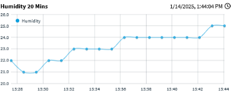
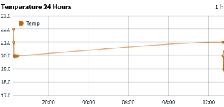
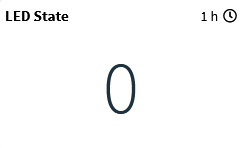
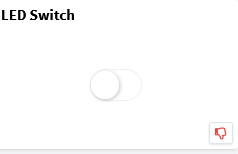
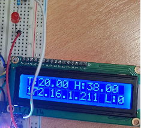

🌡️ IoT Environmental Monitor#
- Type: Embedded System / IoT
- Hardware: ESP32, DHT11, LCD I2C
- Platform: Thinger.io Cloud
- Language: C++ (Arduino)
- Repository: View Source Code on GitHub
📡 Project Overview#
This project is a complete IoT solution for monitoring environmental conditions (Temperature & Humidity) in real-time. It bridges the physical world with the cloud, allowing for remote data visualization and control.
The system is built around the ESP32 microcontroller, which collects sensor data, processes it locally, and transmits it via Wi-Fi to the Thinger.io platform.
👥 Team#
- Antonios Vatousis: Software & Cloud Implementation (C++, Thinger.io config)
- Nikolaos Giatras: Hardware Assembly & Circuit Design
🛠️ Key Features#
1. Real-Time Cloud Dashboard#
Data is streamed instantly to a custom dashboard on Thinger.io, featuring gauges for current values and line charts for historical analysis (24h Temperature, 20min Humidity).


2. Edge Computing#
Instead of just sending raw data, the ESP32 performs local calculations, such as computing the 5-minute rolling average temperature to smooth out sensor noise before uploading.
3. Bi-Directional Control#
The communication isn't just one-way. The system supports remote commands, allowing users to toggle a status LED on the device directly from the web dashboard.


4. Local Feedback#
An I2C LCD display provides immediate feedback on-site, showing:
- Current Temperature & Humidity
- Device IP Address (for debugging)
- Connection Status

💻 Code Logic#
The firmware handles connection stability and data rate limits (2-second interval) to comply with API constraints.
// Example of the logic loop
if (tempCount >= 150) {
temp5mins = tempSum / tempCount;
// Transmit average to cloud...
tempSum = 0;
tempCount = 0;
}